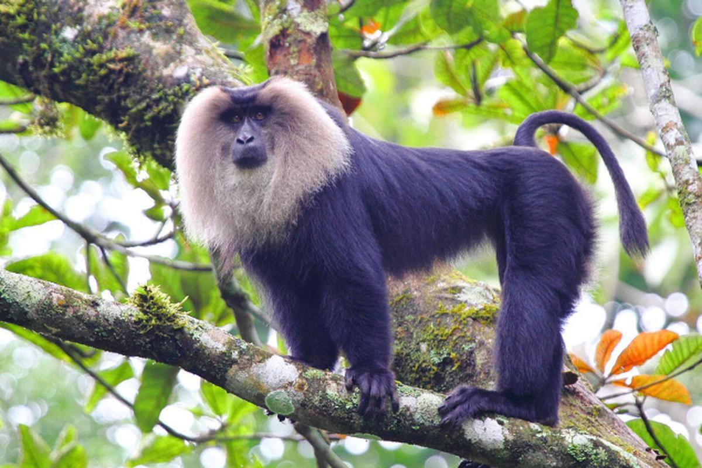
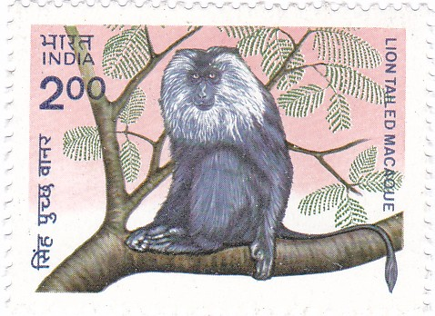

Lion Tailed Macaque
സിംഹവാലൻ കുരങ്ങ്


The lion-tailed macaque (Macaca silenus) is an Old World monkey endemic to the Western Ghats of India. It is one of the rarest and most endangered primates in the world, classified as Endangered by the International Union for Conservation of Nature (IUCN). These primates exhibit a distinct life cycle, with a lifespan of up to 30 years in the wild and around 35-40 years in captivity. They reach sexual maturity between four and seven years of age, with females giving birth to a single offspring after a gestation period of about six months. Their slow reproductive rate contributes to their vulnerability, as population recovery is a lengthy process.
Physically, the lion-tailed macaque is characterized by its black fur and a prominent silver-white mane surrounding its head, which gives it a lion-like appearance. It has a tufted tail, a feature that differentiates it from other macaque species. Adult males weigh around 8-10 kg, while females are slightly smaller, weighing between 3-6 kg. They are diurnal and arboreal, spending most of their lives in the upper canopy of tropical rainforests. They have a complex social structure based on dominance hierarchies, with groups typically comprising 10 to 20 individuals. Communication involves a combination of vocalizations, facial expressions, and body postures.
The natural habitat of the lion-tailed macaque is the dense, evergreen forests of the Western Ghats, primarily in the states of Kerala, Karnataka, and Tamil Nadu. These primates require continuous forest cover, as they are highly adapted to life in the treetops and rarely descend to the ground. Their presence has been recorded in various protected areas, including Silent Valley National Park, Kalakkad-Mundanthurai Tiger Reserve, Anamalai Tiger Reserve, and Periyar Wildlife Sanctuary. They rely on a diet consisting mainly of fruits, leaves, flowers, and occasional insects, making them an essential species for seed dispersal and maintaining forest biodiversity.
Survival strategies of the lion-tailed macaque revolve around their arboreal lifestyle, enabling them to evade ground-based predators such as leopards and wild dogs. However, they face significant threats due to habitat fragmentation, deforestation, and human encroachment. Unlike other macaques that may adapt to human settlements, lion-tailed macaques are highly dependent on undisturbed forests. Conservation efforts include habitat restoration, the establishment of wildlife corridors, and ecotourism initiatives aimed at reducing human-wildlife conflict. Conservation breeding programs in select zoological parks also contribute to their survival, though reintroduction into the wild remains a challenge.
In Kerala, the lion-tailed macaque is found in various forested regions, including Agali in Palakkad district. The forests of Agali form part of the Nilgiri Biosphere Reserve, providing a suitable habitat for these primates. However, the species faces continuous threats due to expanding agriculture and developmental activities in the region. Local conservation efforts, including community-based initiatives, play a crucial role in protecting the macaques and their habitat. Research studies have documented their presence in the Silent Valley National Park and adjacent areas, highlighting the need for sustainable forest management. Awareness campaigns and legal protection under the Wildlife Protection Act of India (1972) have helped curb some threats, but ongoing efforts are required to ensure their long-term survival.
Matching Stamp

Indian Wild Life: Lion Tailed Macaque, 01.10.1983
| Date of Introduction | October 31, 1992 |
|---|---|
| Address | Sub Postmaster, |
| Agali SO, | |
| Palakkad (dt.), Tamil Nadu - 678581. |